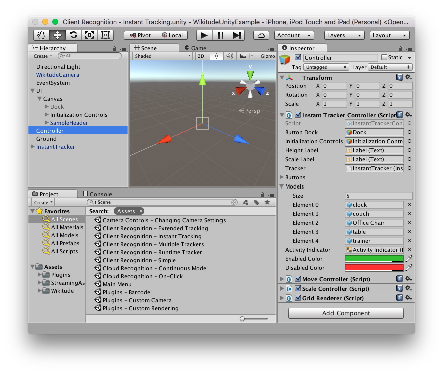
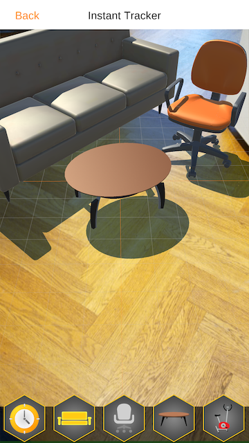

Instant Tracking
The following sections detail the instant tracking feature of the Wikitude Native SDK by introducing a minimal implementation, showcasing the simplicity the Wikitude Native SDK provides.
SMART - Seamless AR Tracking
SMART is a seamless API which integrates ARKit, ARCore and Wikitude’s SLAM in a single augmented reality SDK, cross-platform, for any device. It ensures the delivery of the best possible augmented reality experience on a wider range of devices, covering 92,6% of iOS devices and about 35% of Android devices available in the market.
SMART is enabled by default but can be disabled by unchecking the SMART Enabled checkbox located at the top of the Instant Tracker inspector.
Alternatively, it can be disabled in code using the SMARTEnabled property on the InstantTracker. Please keep in mind that this needs to happen before the InstantTracker initializes its native counterpart, which happens during the OnEnable method.
public InstantTracker tracker;
void Awake() {
tracker.SMARTEnabled = false;
}
To check if the device supports platform assistance for tracking, WikitudeSDK.IsPlatformAssistedTrackingSupported can be called. Please keep in mind that this needs to be called after the Start method of the WikitudeCamera was executed, to make sure that the native components are properly initialized.
if (WikitudeCamera.IsPlatformAssistedTrackingSupported) {
// Device offers platform tracking capabilities (ARKit or ARCore)
}
SMART provides improved tracking capabilities at the expense of control. Because of that some Wikitude SDK features are not available when platform tracking capabilities are used by enabling SMART.
| Features | SMART ON and platform assisted tracking supported | SMART OFF |
|---|---|---|
| Improved Tracking | ✓ | x |
| Plane Orientation | x | ✓ |
| Camera Control | x | ✓ |
Introduction
Instant tracking is an algorithm that, contrary to those previously introduced in the Wikitude SDK, does not aim to recognize a predefined target and start the tracking procedure thereafter, but immediately start tracking in an arbitrary environment. This enables very specific use cases to be implemented.
The algorithm works in two distinct states; the first of which is the initialization state. In this state the user is required to define the origin of the tracking procedure by simply pointing the device and thereby aligning an indicator. Once the alignment is found to be satisfactory by the user (which the users needs to actively confirm), a transition to the tracking state is performed. In this state, the environment is being tracked, which allows for augmentations to be placed within the scene.
The instant tracking algorithm requires another input value to be provided in the initialization state. Specifically, the height of the tracking device above ground is required in order to accurately adjust the scale of augmentations within the scene. To this end, the example features a range input element that allows the height to be set in meters.
During the initialization, another parameter can be set which influences the alignment of the instant tracking ground plane. This ground plane is represented by the initialization indicator and can be rotated in order to start instant tracking at e.g. a wall instead of the floor.
Basic Instant Tracking
The Instant Tracking example provides a simple implementation of an application that allows users to place furniture in their environment.
Scene Setup
The scene consists mainly of the following parts:
WikitudeCamera: the standard prefab for theWikitudeCamerais used, with the exception that it is running in SD at 30 FPS. This is the recommended setup forInstant Tracking, as the algorithm is computationally intense and users might experience slowdowns on older devices.UI: the root of theUIwe will be using in this sample. SinceInstant Trackingworks in two distinct phases, theUIis also split in two, allowing to completely switch the interface. When theInstant Trackeris inInitializingmode, theUIonly displays a slider to control the height, as explained previously and a button to switch toTrackingmode. After the switch is done, theUIwill display a button for each furniture model that can be added to the scene. Each button has anOnBeginDragevent trigger on it that notifies the controller when a new furniture model needs to be added to the scene. The event trigger also has anintparameter, specifying which model should be created.Controller: container for multiple custom script components:InstantTrackerController: coordinates the activity between theInstant Tracker, theUI, the augmentations and the touch input.Gesture Controllers: react to touch input events and move or scale the augmentations accordingly.Grid Renderer: renders a grid with 25 cm spacing that can be helpful during initialization and tracking
Ground: a simple transparent plane with a custom shader that enables shadows on it. The plane also has a collider on it and can be used for physics interaction.Instant Tracker: the component that actually does all the tracking.

Instant Tracker Controller
The controller script coordinates all the other components of the scene. It contains references to all the UI elements and responds to events from them.
In the Awake function, the Application.targetFrameRate is set to 60. Even though the camera and tracking is running only at 30 FPS, having Unity running at a higher FPS allows for smoother user interaction.
When a drag is detected and the OnBeginDrag callback is called, we create a new model based on the index we receive and place it at the touch position, facing the camera.
// Select the correct prefab based on the modelIndex passed by the Event Trigger.
GameObject modelPrefab = Models[modelIndex];
// Instantiate that prefab into the scene and add it in our list of visible models.
Transform model = Instantiate(modelPrefab).transform;
_activeModels.Add(model.gameObject);
// Set model position by casting a ray from the touch position and finding where it intersects with the ground plane
var cameraRay = Camera.main.ScreenPointToRay(Input.mousePosition);
Plane p = new Plane(Vector3.up, Vector3.zero);
float enter;
if (p.Raycast(cameraRay, out enter)) {
model.position = cameraRay.GetPoint(enter);
}
// Set model orientation to face toward the camera
Quaternion modelRotation = Quaternion.LookRotation(Vector3.ProjectOnPlane(-Camera.main.transform.forward, Vector3.up), Vector3.up);
model.rotation = modelRotation;
When the tracker loses the scene, which can happen when moving the device too fast, we make sure that all the models and the grid are hidden. Because the camera is not moved anymore when tracking is lost, the augmentations would appear to be frozen on the screen if they were not hidden. We also need to disable the furniture buttons, to prevent users from adding new objects.
While the SDK doesn't currently work in Edit Mode, you can still test the demo in the Editor by using Unity Remote. The SDK will also send most of the callbacks you expect in Edit Mode as well, allowing you to prototype gesture interaction without constantly building on a device.

Instant Scene Picking
The Scene Picking example how you can convert a touch position to a 3D position that maps to the environment. When using this API, users could for example place objects not only on the ground plane, but also on top of real world objects.
Scene Setup
The scene structure is similar to the one described in the Instant Tracking example, but has been simplified a bit. Specifically, the UI doesn't contain any furniture related controls, and there are no Gesture Controllers anymore.
Scene Picking Controller
The controller script is also much simpler than that of the Instant Tracking example. Its main concerns are listening for touch inputs, converting those inputs to 3D coordinates and placing an augmentation there. It is also responsible for the managing the state of the InstantTracker.
To convert input touch positions to 3D coordinates, the script calls the ConvertScreenCoordinate method on the InstantTracker, passing it the touch position as Unity provides it.
void Update() {
if (_isTracking && Input.GetMouseButtonUp(0)) {
Tracker.ConvertScreenCoordinate(Input.mousePosition);
}
}
Because the conversion can take a long time, it is done on a separate thread and a callback event is provided in the InstantTracker to let you know when the results are available. The example script registers to this event in the Awake method.
void Awake() {
Tracker.OnScreenConversionComputed.AddListener(OnScreenConversionComputed);
}
Finally, when the conversion was computed, it adds the augmentation to the specified location. It firsts needs to check if the conversion was successful, as it can fail if there is not enough information in the point cloud where the touch event happened. It adds the augmentation as a child of the _trackable, because the coordinates are in the local space of the InstantTrackable.
public void OnScreenConversionComputed(bool success, Vector2 screenCoordinate, Vector3 pointCloudCoordinate) {
if (success) {
var newAugmentation = GameObject.Instantiate(Augmentation, _trackable.transform) as GameObject;
// The pointCloudCoordinate values are in the local space of the trackable.
newAugmentation.transform.localPosition = pointCloudCoordinate;
_augmentations.Add(newAugmentation);
}
}